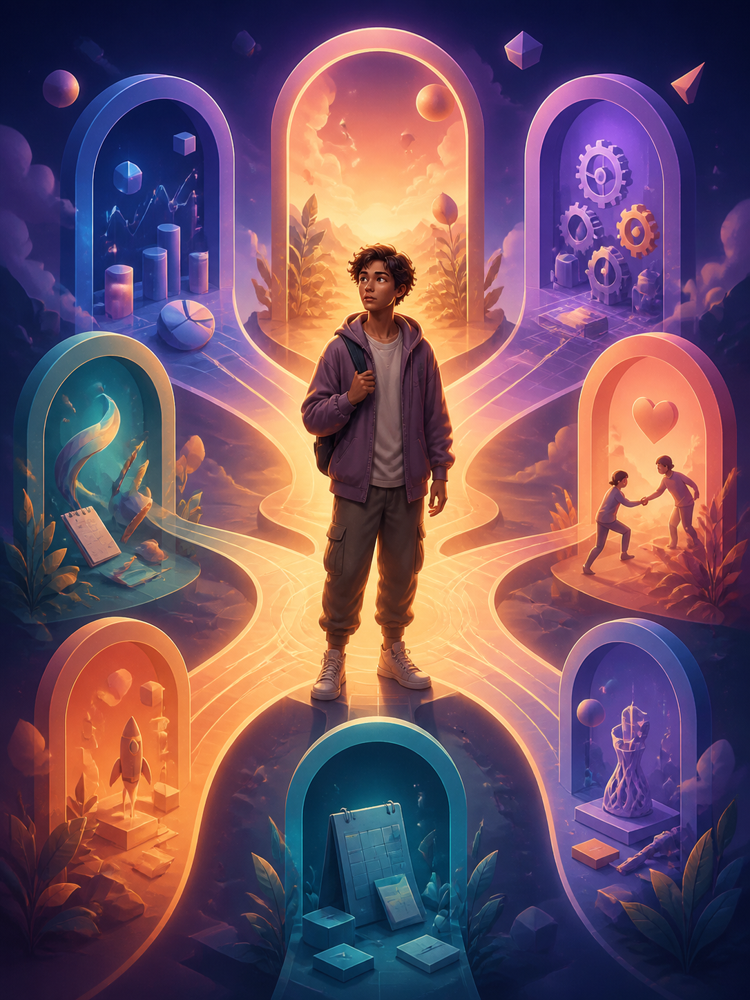
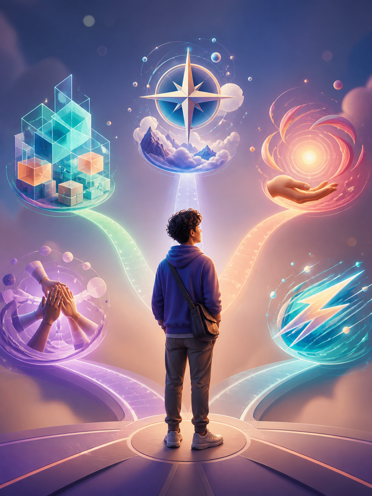
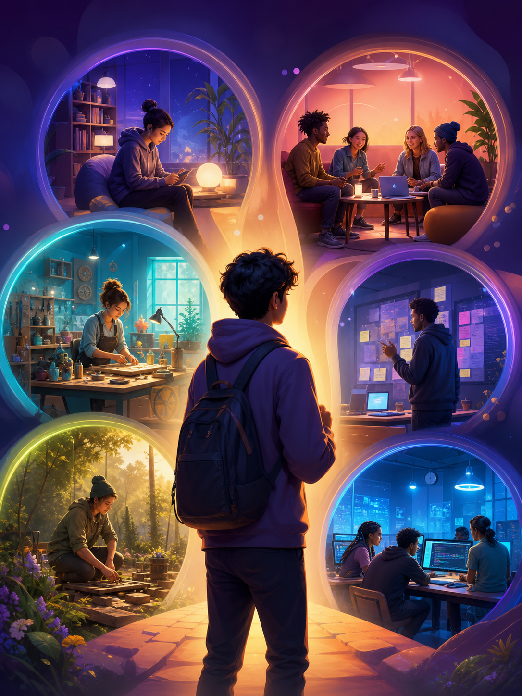

Профессиональные интересы
Какие задачи и направления действительно вас увлекают?
Пройти →Содержательные и развлекательные тесты с красивым результатом. Без регистрации — ответы рассчитываются на вашем устройстве.

Какие задачи и направления действительно вас увлекают?
Пройти →Какой вклад вы естественно привносите в общее дело?
Пройти →
Анализ, интуиция, совет, эксперимент или пауза?
Пройти →
Где вам легче сохранять интерес и показывать сильные стороны?
Пройти →